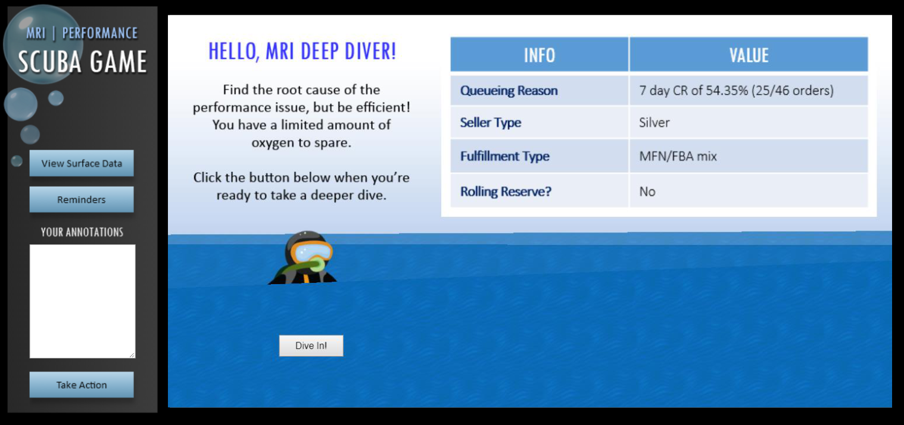
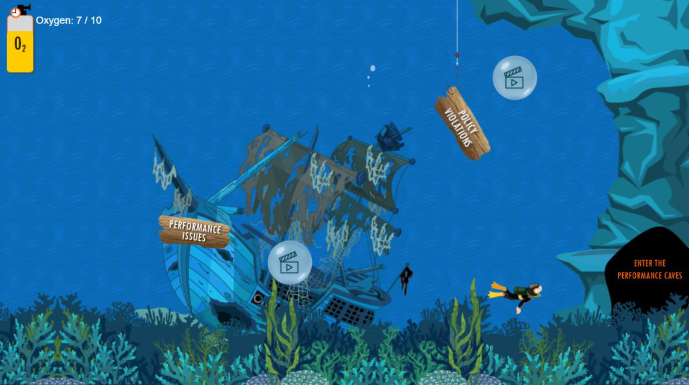
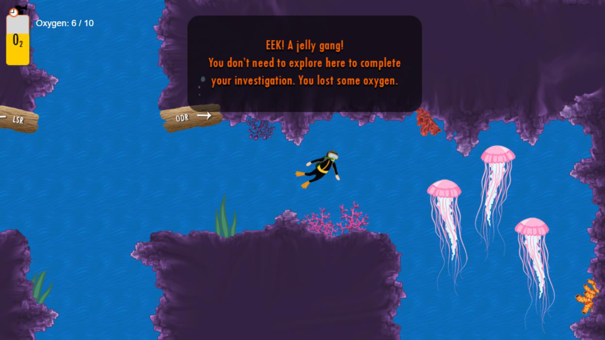
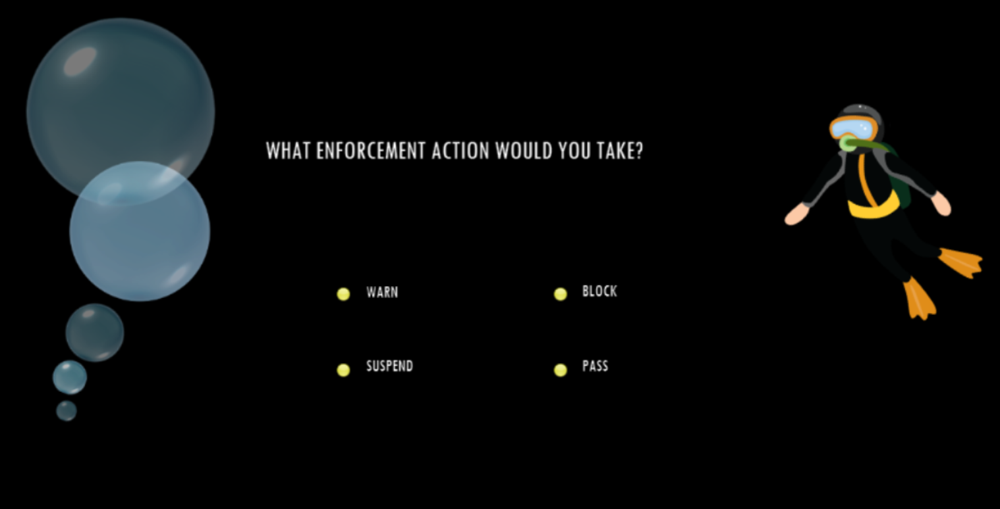
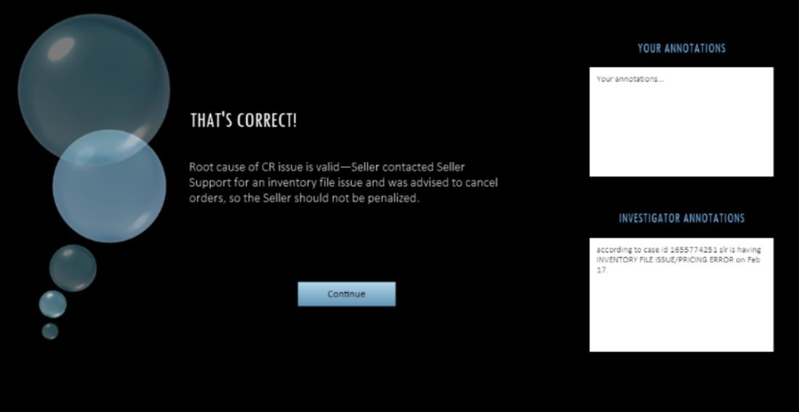
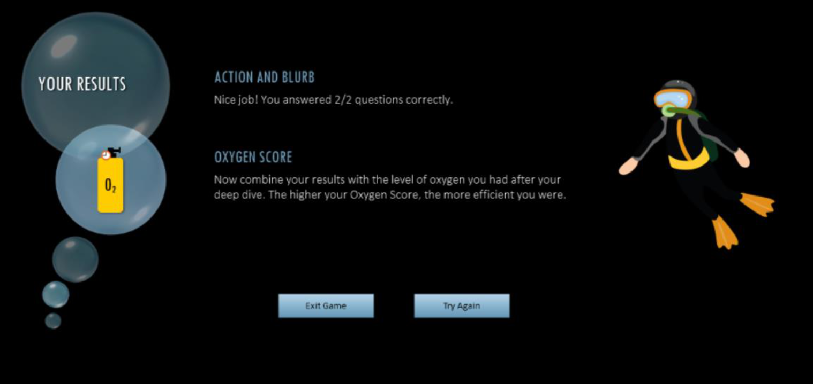

Scuba Game
The Performance Scuba Game is designed to give the new fraud investigator practice finding the root cause of a performance issue on an online seller's account. Sticking with the underwater "deep dive" theme of the curriculum, the investigator plays the role of a scuba diver, exploring the "Performance Caves" for the information they need to identify the root cause of an issue flagged by the system. Not all caves are relevant to the root cause, so if the diver explores a cave they don't need to, they'll lose an oxygen point. This is a subtle feature of the game to help drive home the importance of speed/efficiency in an investigation.
Here's a demo of the game, followed by some screenshots.





